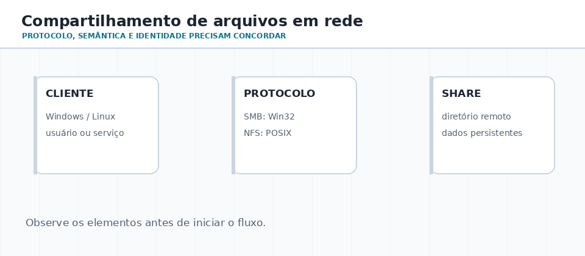
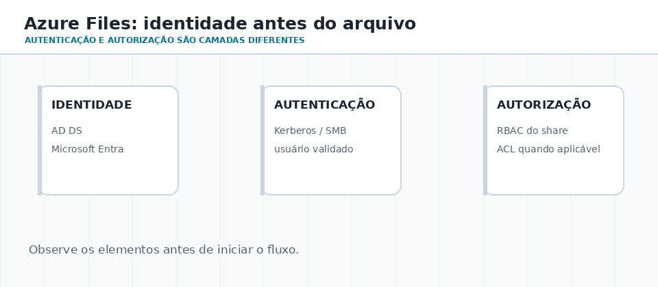
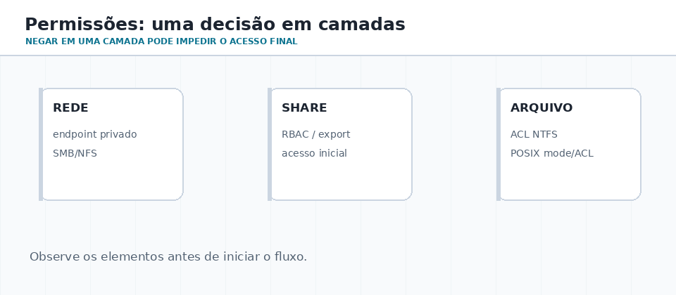

Como o arquivo viaja?
Compare SMB e NFS: protocolo, semântica e sistemas que os utilizam.
AULA 07 · APROX. 65–80 MINUTOS
Compartilhar uma pasta parece simples até aparecerem plataformas diferentes, grupos de usuários, auditoria, rede instável e regras que não podem ser tratadas como “uma senha para tudo”.
01 · MAPA DA AULA
Compare SMB e NFS: protocolo, semântica e sistemas que os utilizam.
Separe autenticação, autorização, grupos, ACL e RBAC.
Faça o laboratório de observação e projete uma pasta departamental segura.
02 · PROTOCOLOS
SMB é comum em ambientes Windows e preserva uma experiência de compartilhamento rica para aplicações Win32. NFS é uma escolha tradicional do mundo Unix/Linux, baseada no modelo POSIX e em identidades locais UID/GID.
A questão inicial é: quais clientes, quais identidades e quais regras o compartilhamento deve respeitar? A resposta muda a escolha do protocolo e da gestão de acesso.
| Questão | SMB | NFS |
|---|---|---|
| Ecossistema | Windows e clientes compatíveis | Linux/Unix e workloads POSIX |
| Identidade típica | AD DS, Microsoft Entra / Kerberos conforme o serviço | UID/GID e regras do servidor |
| Pensamento inicial | usuário + grupo + ACL | usuário/grupo Unix + permissões POSIX |

03 · AUTENTICAR ≠ AUTORIZAR
O usuário ou serviço se apresenta: conta local, domínio, Kerberos, certificado ou identidade gerenciada.
O sistema aplica grupos, RBAC, ACL, modo POSIX e regras de compartilhamento.
Logs e metadados permitem investigar quem leu, mudou ou tentou acessar um recurso.

Para SMB com identidade, uma conta de armazenamento utiliza uma fonte por vez: Microsoft Entra Kerberos, Active Directory Domain Services ou Microsoft Entra Domain Services. Isso não significa que todos os cenários NFS usam o mesmo mecanismo.
04 · CAMADAS DE PERMISSÃO
Em um compartilhamento corporativo, a decisão pode envolver rede, compartilhamento, papel RBAC, identidade, ACL da pasta e, em Linux, modo e ACL POSIX. Investigue do lado de fora para dentro.

| Camada | Pergunta para diagnosticar | Exemplo |
|---|---|---|
| Conectividade | O cliente alcança o serviço? | DNS, rota, firewall, porta 445 no SMB |
| Identidade | Quem é o solicitante? | usuário AD, principal Entra, UID/GID |
| Controle do share | Pode montar/abrir o compartilhamento? | RBAC de nível de share |
| Controle do objeto | Pode ler, criar, alterar ou excluir? | ACL NTFS ou permissões POSIX |
05 · SIMULADOR DE DECISÃO
06 · LABORATÓRIO SEGURO
whoami /groups Get-SmbShare Get-Acl "$env:USERPROFILE\Documents" Test-NetConnection localhost -Port 445
id findmnt -T ~ mount | grep -E 'cifs|nfs' getfacl . # se o pacote acl estiver instalado
07 · VERIFICAÇÃO
Qual opção descreve corretamente RBAC e ACL?
08 · DESAFIO FINAL · 25–35 MIN
Há três grupos: Docentes (alteram), Estudantes (leem uma área e enviam entregas) e Coordenação (administra). Defina protocolo, identidade, grupos, permissões no compartilhamento e permissões nas pastas. Inclua uma evidência de auditoria que você desejaria guardar.
Produza uma tabela de decisão e marque em qual camada cada regra será aplicada. Não há uma única ferramenta correta: a qualidade está na justificativa coerente.